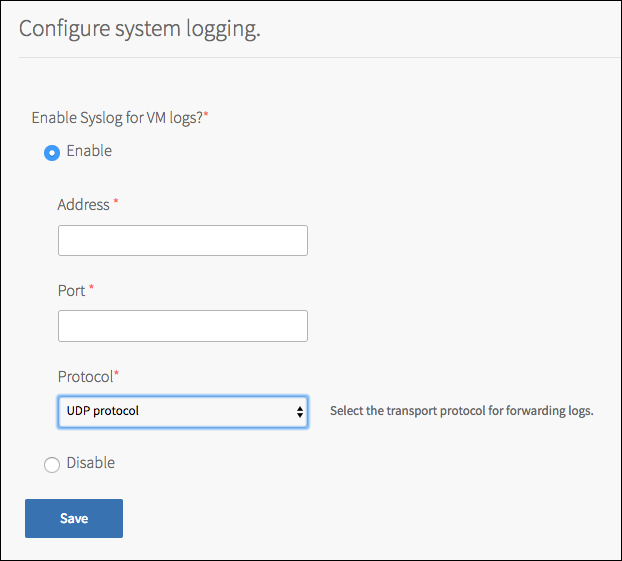
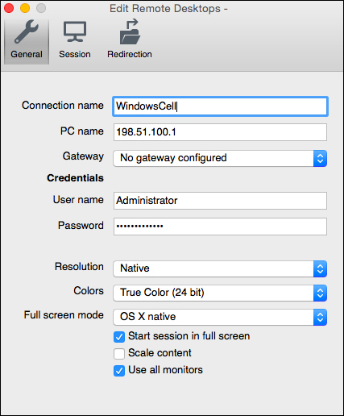
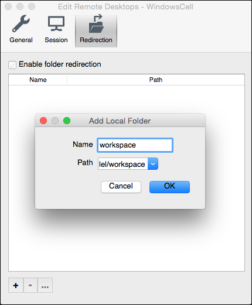

Troubleshooting Windows Cells
This topic describes how to troubleshoot Windows cells deployed by Pivotal Application Service (PAS) for Windows 2012R2.
Windows Cell Log Types
Windows cells generate two types of logs:
BOSH job logs, such as
rep_windowsandconsul_agent_windows. These logs stream to the syslog server configured in the PAS tile System Logging pane, along with other PCF component logs. The names of these BOSH job logs correspond to the names of the logs emitted by Linux Diego cells.Windows Event logs. These stream to the syslog server configured in the PAS for Windows 2012R2 System Logging pane and are downloadable through Ops Manager, as described below.
Access Windows Event Logs
PCF operators can access log messages from Windows Diego cells in two ways:
Configure PAS for Windows to send all Windows cell logs to an external syslog server.
Download archived logs from each Windows cell individually.
Send Cell Logs to a Syslog Server
To forward Windows cell log messages to an external syslog server, complete the following steps:
Navigate to the Ops Manager Installation Dashboard.
Click the PAS for Windows 2012R2 tile.
Under the Settings tab, select the System Logging pane. 
Under Enable Syslog for VM logs?, click Enable
Under Address, enter the IP address of your syslog server.
Under Port, enter the port of your syslog server. The typical port for a syslog server is
514.Note: The host must be reachable from the PAS network. Ensure your syslog server listens on external interfaces.
Under Protocol, select the transport protocol to use when forwarding logs.
Click Save.
Download Cell Logs
Perform the following steps to retrieve the logs for the Windows cell:
- Navigate to the Ops Manager Installation Dashboard.
- Click the PAS for Windows 2012R2 tile.
- Click the Status tab.
- Under the Logs column, click the download icon for the Windows cell you want to retrieve logs from.
- Click the Logs tab.
- When the logs are ready, click the filename to download them.
- Unzip the file to examine the contents. Each component on the cell has its own logs directory:
/consul_agent_windows//garden-windows//metron_agent_windows//rep_windows/
Connect to a Windows Cell
Perform the following steps to connect to your Windows cell to run diagnostics:
Download and install a Remote Desktop Protocol (RDP) client.
- For Mac OS X, download the Microsoft Remote Desktop app from the Mac App Store.
- For Windows, download the Microsoft Remote Desktop app from Microsoft.
- For Linux/UNIX, download an RDP client like rdesktop.
Select the Enable Remote Desktop Protocol checkbox under
VM Optionsin the tile.
Obtain the IP address of the Windows cell you would like to connect to from the
Statustab of the tile.
Obtain login credentials for your Windows cell.
- AWS or vSphere: if you chose Set the password under VM Options > Manage Administrator Password when you configured the PCF Runtime for Windows tile, the username is
Administratorand the password is the one you entered. If you did not set the password, it is not possible to obtain the current Administrator password through the IaaS, because the BOSH agent randomized the password. - GCP: follow the linked instructions for obtaining credentials.
- Azure: follow the linked instructions for obtaining credentials.
Establish an RDP connection
Open your RDP client. The examples below use the Microsoft Remote Desktop app.
Click New and enter your connection information: 
- Connection name: Enter a name for this connection.
- PC name: Enter the IP address of your Windows cell.
- User name: Enter the appropriate username.
- Password: Enter the password of your Windows cell that you created.
To mount a directory on your local machine as a drive in the Windows cell, perform the following steps:
- From the same Edit Remote Desktops window as above, click Redirection.
- Click the plus icon at the bottom left. 
- For Name, enter the name of the drive as it will appear in the Windows cell. For Path, enter the path of the local directory.
- Click OK.
Close the Edit Remote Desktops window and double-click the newly added connection under My Desktops to open a RDP connection to the Windows cell.
In the RDP session, you can use the Consul CLI to diagnose problems with your Windows cell.
Notes:
For vSphere, it is also possible to connect to your windows cell using the vCenter console once the Administrator password has been set.
If the Windows is not accessible from your host, tunnel through the Ops Manager VM. To do this, SSH into the Ops Manager VM with the flag
-L 3389:<Windows Cell IP>:3389and then use IP 127.0.0.1 from your RDP client.
Consul CLI
Perform the following steps to use the Consul CLI on your Windows cell to diagnose problems with your Consul cluster:
- In your RDP session, open a PowerShell window.
- Change into the directory that contains the Consul CLI binary:
PS C:\Users\Administrator> cd C:\var\vcap\packages\consul-windows\bin\
- Use the Consul CLI to list the members of your Consul cluster:
PS C:\Users\Administrator\var\vcap\packages\consul-windows\bin> .\consul.exe members Node Address Status Type Build Protocol DC cell-windows-0 10.0.0.111:8301 alive client 0.6.4 2 dc1 cloud-controller-0 10.0.0.94:8301 alive client 0.6.4 2 dc1 cloud-controller-worker-0 10.0.0.99:8301 alive client 0.6.4 2 dc1 consul-server-0 10.0.0.96:8301 alive server 0.6.4 2 dc1 diego-brain-0 10.0.0.109:8301 alive client 0.6.4 2 dc1 diego-cell-0 10.0.0.103:8301 alive client 0.6.4 2 dc1 diego-cell-1 10.0.0.104:8301 alive client 0.6.4 2 dc1 diego-cell-2 10.0.0.107:8301 alive client 0.6.4 2 dc1 diego-database-0 10.0.0.92:8301 alive client 0.6.4 2 dc1 ha-proxy-0 10.0.0.254:8301 alive client 0.6.4 2 dc1 nfs-server-0 10.0.0.100:8301 alive client 0.6.4 2 dc1 router-0 10.0.0.105:8301 alive client 0.6.4 2 dc1 uaa-0 10.0.0.93:8301 alive client 0.6.4 2 dc1
- Examine the output to ensure that the
cell-windows-0service is registered in the Consul cluster and isalive. Otherwise, your Windows cell cannot communicate with your PCF deployment and developers cannot push .NET apps to the Windows cell. Check the configuration of your Consul cluster, and ensure that your certificates are not missing or misconfigured.